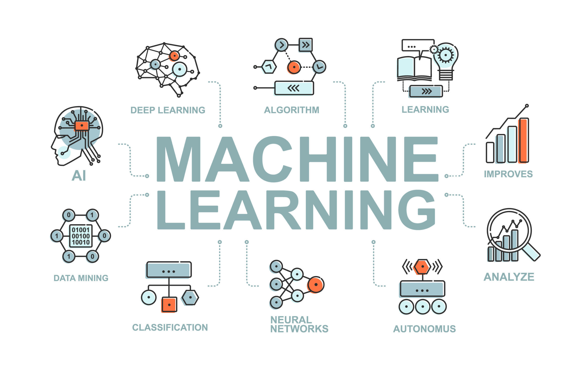
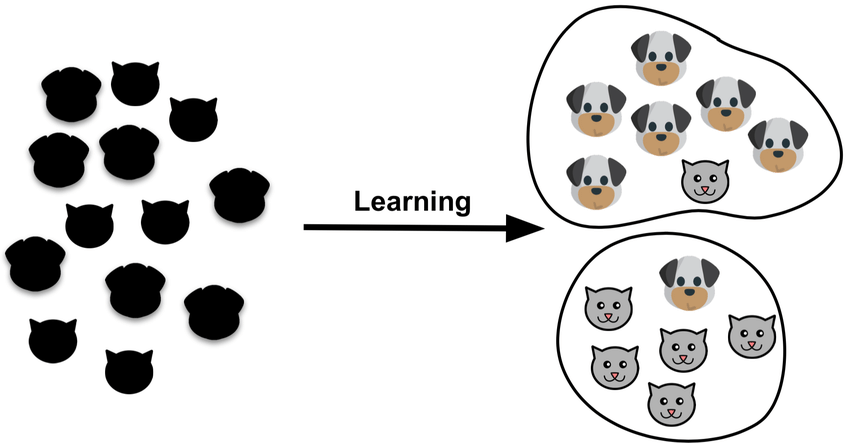
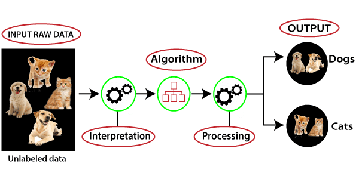
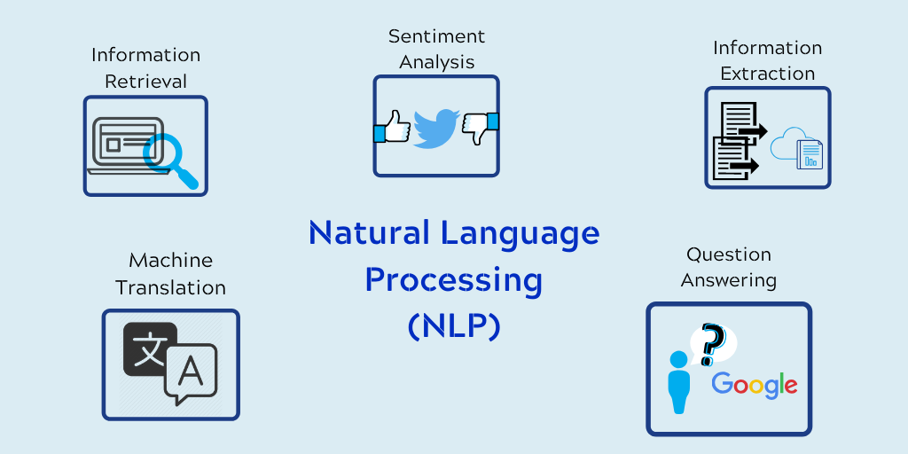

Les branches de l'intelligence artificielle
Puisque l'IA est une technologie dont le but est d'imiter le comportement humain, nous pouvons dire sans risque que les branches de l'IA comprendront les entités qui nous rendent différents des machines. Découvrons donc brièvement les branches de l'intelligence artificielle et essayons de les mettre en corrélation avec les activités humaines !
Machine Learning
En termes de technologie avancée, l'un des domaines les plus exigeants est l'apprentissage automatique, il fait le buzz chaque jour lorsqu'un nouveau produit est présenté par une entreprise qui déploie des techniques et des algorithmes d'apprentissage automatique pour fournir le consommateur d'une manière très créative.
L'apprentissage automatique est la technique qui donne aux ordinateurs le potentiel d'apprendre sans être programmés, il est activement utilisé dans la vie quotidienne, les applications d'apprentissage automatique dans la vie quotidienne, même sans le savoir. Fondamentalement, il s'agit de la science qui permet aux machines de traduire, d'exécuter et d'étudier des données pour résoudre des problèmes du monde réel.
Grâce au déploiement d'une expertise mathématique complexe, les programmeurs conçoivent des algorithmes d'apprentissage machine qui sont codés dans un langage machine afin de créer un système ML complet. De cette façon, l'apprentissage automatique nous permet d'effectuer des tâches pour catégoriser, déchiffrer et estimer les données d'un ensemble de données donné.
Ces dernières années, le ML nous a permis d'obtenir des voitures à conduite autonome, la reconnaissance d'images et de la parole, des modèles de prévision de la demande, des recherches utiles sur le Web et diverses applications étendues. Elle converge essentiellement vers les applications qui s'adaptent à l'expérience et améliorent leur potentiel décisionnel ou leur précision prédictive au fil du temps.
En outre, en fonction des types de données disponibles, les professionnels des données sélectionnent des types d'apprentissage automatique (algorithmes) pour ce qu'ils veulent prédire à partir des données
On distingue trois techniques de Machine Learning : l'apprentissage supervisé, l'apprentissage non-supervisé, et l'apprentissage par renforcement
-
Supervised Learning
- Les problèmes de régression et de classification sont principalement résolus par l'apprentissage supervisé.
- Des données étiquetées sont utilisées pour la formation.
- Algorithmes populaires : Régression linéaire, régression logistique, machines à vecteurs de support (SVM), réseaux neuronaux, arbre de décision, forêt aléatoire, KNN, Naive Bayes, plus proche voisin, etc.
- Il est principalement utilisé dans la modélisation prédictive.
Unsupervised Learning
- L'apprentissage non supervisé est utilisé pour les problèmes de clustering (regroupement), la détection d'anomalies (dans les banques pour les transactions inhabituelles) où il est nécessaire de trouver des relations entre les données fournies.
- Des données non étiquetées sont utilisées pour la formation ici...
- Algorithmes populaires : Algorithme Apriori, clustering k-means, règle d'association.
- Il est principalement utilisé dans la modélisation descriptive.
-
Reinforcement Learning
- Le renforcement de base est modélisé comme un processus de décision de Markov.
- Les algorithmes les plus populaires utilisés ici sont le Q-Learning, les Deep Adversarial Networks.
- Les ordinateurs jouant à des jeux de société tels que les échecs et le GO, les voitures autopilotées utilisent ce type d'apprentissage automatique.
L'apprentissage supervisé est axé sur les tâches. Vous devez guider la machine pour qu'elle effectue une certaine tâche. L'ensemble de données joue ici le rôle de professeur et son rôle est de former la machine. Une fois que la machine est correctement formée, elle peut commencer à faire des prédictions ou à prendre des décisions lorsque de nouvelles données arrivent. L'apprentissage automatique supervisé recherche des modèles dans les étiquettes de valeur qui sont attribuées à un ensemble de données.
Par exemple, plusieurs images d'un chat, d'un chien, d'une orange, d'une pomme, etc. sont étiquetées et introduites dans la machine pour l'entraînement et la machine doit les identifier. Tout comme un enfant humain à qui l'on montre un chat et à qui l'on dit de le faire, lorsqu'il voit un chat complètement différent parmi d'autres, il l'identifie quand même comme un chat, la même méthode est employée ici dans l'apprentissage supervisé.
Points clés :
L'apprentissage non supervisé est axé sur les données. Ce modèle apprend à travers les observations et identifie les structures dans les données. Une fois que le modèle est équipé de l'ensemble de données, il identifie automatiquement des modèles et des relations dans l'ensemble de données en y créant des groupes et il a besoin de décrire sa structure et de faire en sorte que des données complexes semblent simples et hautement organisées pour l'analyse.
Par exemple, les images ou les entrées données sont regroupées dans l'apprentissage non supervisé et les idées sur les entrées peuvent être trouvées ici (qui est la plupart des données du monde réel disponibles).
Points clés :
L'apprentissage par renforcement apprend à réagir à un environnement. Elles interagissent avec l'environnement et découvrent ce qui pourrait être le meilleur résultat. La machine apprend de l'expérience passée et tente de saisir les meilleures connaissances possibles pour prendre des décisions précises en fonction du retour d'information reçu. Ce type d'apprentissage automatique suit généralement une méthode de type "hit & trial". Avec le temps, l'algorithme modifie sa stratégie pour apprendre automatiquement. L'agent sera soit récompensé, soit pénalisé pour sa prédiction. Le modèle s'entraîne lui-même grâce aux récompenses positives qu'il obtient.

Points clés :
Neural Networks
Intégrant les sciences cognitives et les machines pour effectuer des tâches, le réseau neuronal est une branche de l'intelligence artificielle qui fait appel à la neurologie (une partie de la biologie qui concerne les nerfs et le système nerveux du cerveau humain). Le réseau neuronal reproduit le cerveau humain, qui comprend un nombre infini de neurones. Le réseau neuronal a pour fonction de coder les neurones du cerveau en un système ou une machine.

En termes simples, un réseau neuronal est un ensemble d'algorithmes qui sont utilisés pour trouver les relations élémentaires entre les paquets de données via le processus qui imite le processus de fonctionnement du cerveau humain.
Ainsi, un réseau neuronal fait référence à un système de neurones originaux ou artificiels par nature, où les neurones artificiels sont connus sous le nom de perceptrons, sachez d'ici, le modèle complet de perceptron dans le réseau neuronal.
Un neurone dans un réseau neuronal est une fonction mathématique (comme les fonctions d'activation) dont le travail est de rassembler et de classer les informations selon une structure particulière, le réseau met fortement en œuvre diverses techniques statistiques, comme l'analyse de régression, pour accomplir des tâches.
De la prévision à l'étude de marché, ils sont largement utilisés pour la détection des fraudes, l'analyse des risques, la prévision boursière, la prévision des ventes et bien d'autres encore.
Robotics
Il s'agit là d'un domaine très dynamique de l'intelligence artificielle. Un domaine intéressant de recherche et de développement se concentre principalement sur la conception et la construction de robots.
- La robotique est un domaine interdisciplinaire de la science et de l'ingénierie qui englobe le génie mécanique, le génie électrique, l'informatique et bien d'autres encore.
- La robotique détermine la conception, la production, le fonctionnement et l'utilisation des robots. Elle traite des systèmes informatiques pour leur contrôle, les résultats intelligents et la transformation des informations.
Les robots sont souvent déployés pour effectuer des tâches qui pourraient être laborieuses pour les humains. Parmi les principales tâches robotiques, citons la chaîne de montage pour la construction automobile et le déplacement de gros objets dans l'espace par la NASA. Les chercheurs en IA développent également des robots utilisant l'apprentissage automatique pour établir une interaction à des niveaux sociaux.
Expert systems
Les systèmes experts ont été considérés comme le premier modèle réussi de logiciel d'IA. Ils ont été conçus pour la première fois dans les années 1970, puis se sont multipliés dans les années 1980. Sous l'égide d'une technologie d'IA, un système expert désigne un système informatique qui imite l'intelligence décisionnelle d'un expert humain. Pour ce faire, il dérive des connaissances de sa base de connaissances en mettant en œuvre des règles de raisonnement et de compréhension en fonction des requêtes de l'utilisateur.
L'efficacité du système expert repose entièrement sur les connaissances de l'expert accumulées dans une base de connaissances. Plus les informations qui y sont collectées sont nombreuses, plus le système améliore son efficacité. Par exemple, le système expert fournit des suggestions concernant l'orthographe et les erreurs dans le moteur de recherche Google.
Les systèmes experts sont construits pour traiter des problèmes complexes par le biais du raisonnement à travers les corps de compétence, exprimés notamment en particulier des règles "si-alors" au lieu de l'ordre traditionnel de codage. Les principales caractéristiques des systèmes experts sont une réactivité extrême, la fiabilité, la compréhension et une exécution élevée.
Fuzzy logic
Dans le monde réel, nous sommes parfois confrontés à une condition où il est difficile de reconnaître si la condition est vraie ou non, leur logique floue donne une flexibilité pertinente pour le raisonnement qui conduit à des inexactitudes et des incertitudes de toute condition. En termes plus simples, la logique floue est une technique qui représente et modifie les informations incertaines en mesurant le degré d'exactitude de l'hypothèse. La logique floue est également utilisée pour raisonner sur des concepts naturellement incertains. La logique floue est pratique et flexible pour mettre en œuvre des techniques d'apprentissage automatique et aider à imiter la pensée humaine de manière logique.
Il s'agit simplement de la généralisation de la logique standard où un concept présente un degré de vérité compris entre 0,0 et 1,0. Si le concept est complètement vrai, la logique standard est de 1,0 et de 0,0 pour le concept complètement faux. Mais en logique floue, il existe également une valeur intermédiaire qui est partiellement vraie et partiellement fausse.
Natural language processing
C'est difficile du point de vue de l'enfant, qui doit passer de nombreuses années à acquérir une langue... C'est difficile pour l'adulte qui apprend une langue, c'est difficile pour le scientifique qui tente de modéliser les phénomènes pertinents, et c'est difficile pour l'ingénieur qui tente de construire des systèmes qui traitent l'entrée ou la sortie du langage naturel. Ces tâches sont si difficiles que Turing a pu, à juste titre, faire de la conversation courante en langue naturelle la pièce maîtresse de son test d'intelligence
En termes simples, le NLP est une partie de l'informatique et de l'IA qui peut aider à la communication entre l'ordinateur et l'homme par le langage naturel. Il s'agit d'une technique de traitement informatique des langues humaines. Elle permet à un ordinateur de lire et de comprendre des données en imitant le langage naturel humain.
La NLP est une méthode qui permet de rechercher, d'analyser, de comprendre et de dériver des informations à partir de données textuelles. Afin d'apprendre aux ordinateurs à extraire des informations significatives des données textuelles, les programmeurs utilisent des bibliothèques NLP. Un exemple courant de NLP est la détection du spam, les algorithmes informatiques peuvent vérifier si un email est un pourriel ou non en regardant le sujet d'une ligne, ou le texte d'un email.
- Il améliore la précision et l'efficacité des documents.
- Il a la capacité de rendre un texte de synthèse lisible de manière automatisée.
- Elle est très avantageuse pour les assistants personnels tels qu'Alexa,
- Il permet aux organisations d'opter pour des chatbots pour le support client.
- Il facilite l'analyse des sentiments.
La mise en œuvre de la PNL offre divers avantages tels que :
Certaines des applications de la PNL sont la traduction de textes, l'analyse des sentiments et la reconnaissance vocale. Par exemple, Twitter utilise la technique NLP pour filtrer le langage terroriste de divers tweets, Amazon met en œuvre le NLP pour interpréter les commentaires des clients et améliorer leur expérience.
